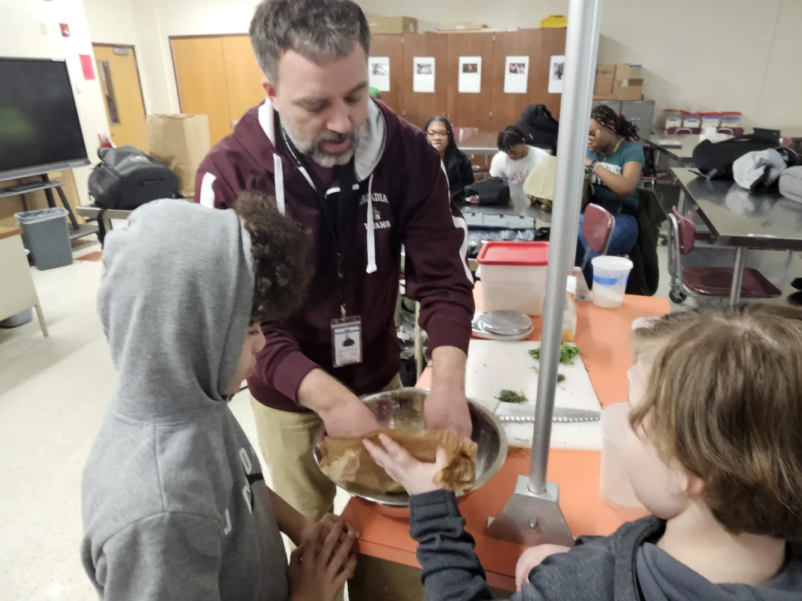
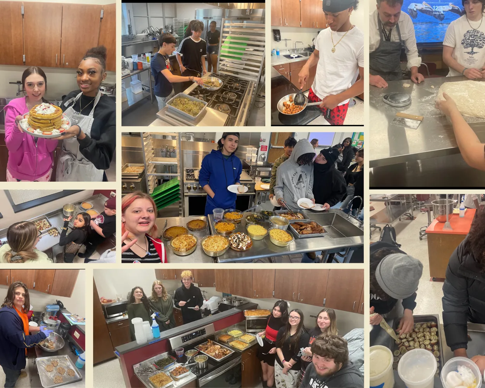

Media
Culinary Pathway visuals
Authorized presentation images support the public pathway story without exposing private student information.



Authorized presentation images support the public pathway story without exposing private student information.

